각 보드는 전신 1개 + 앞·뒤·옆 도트 3개 + 표정 초상화 4개로 구성합니다. 그림을 누르면 크게 볼 수 있어요. 외형 설정 가안이며 게임용 스프라이트·애니메이션 완성본은 아닙니다.
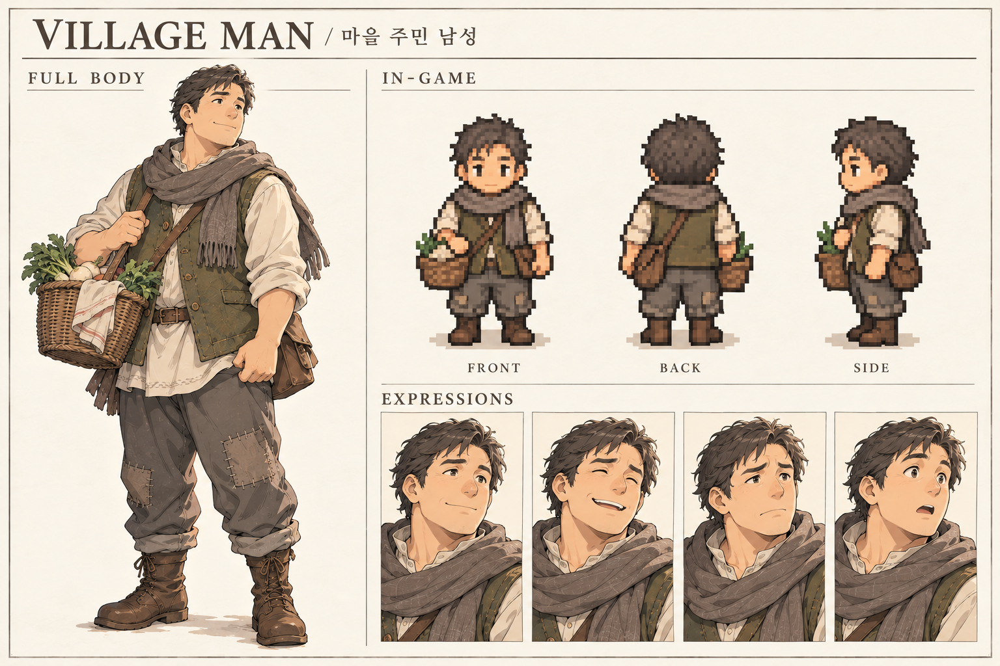
주민 · 서리골 · 돌샘
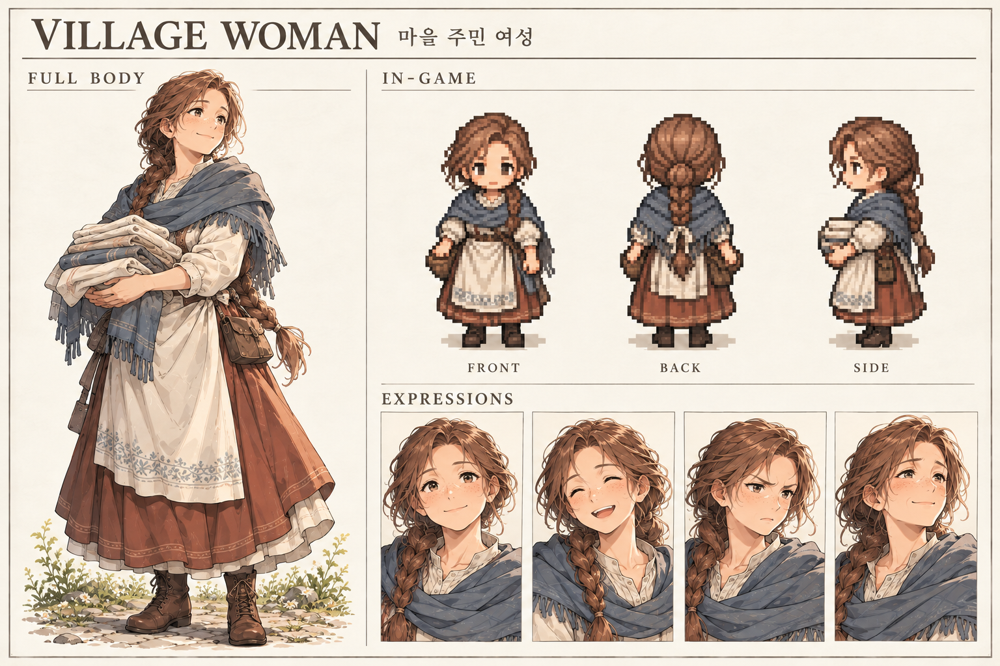
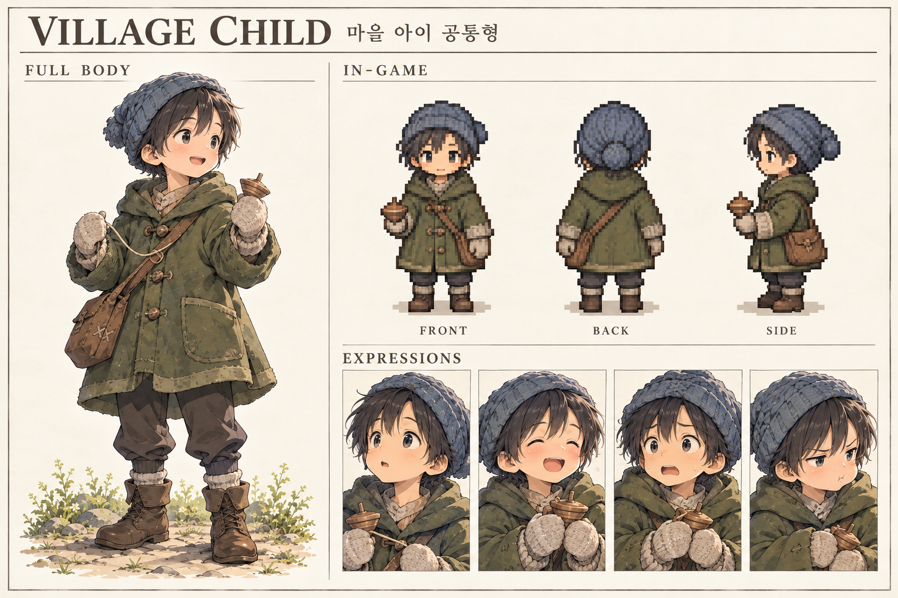
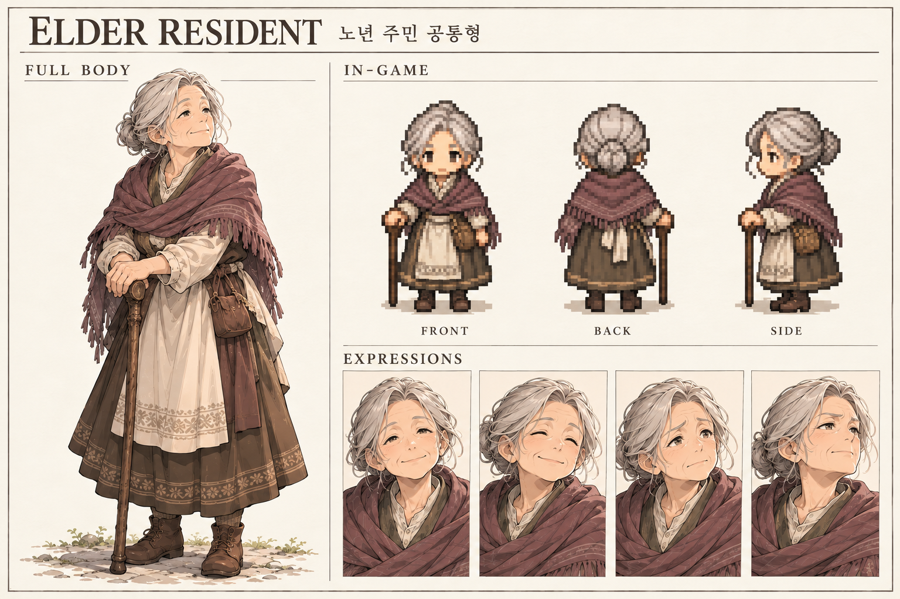
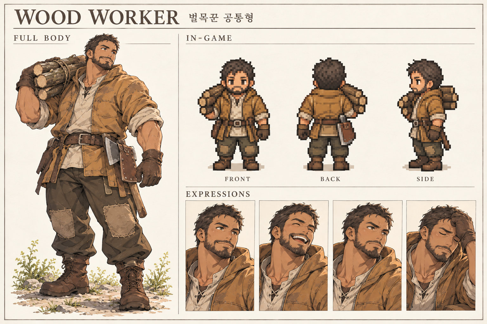
노동자 · 서리골 · 산길
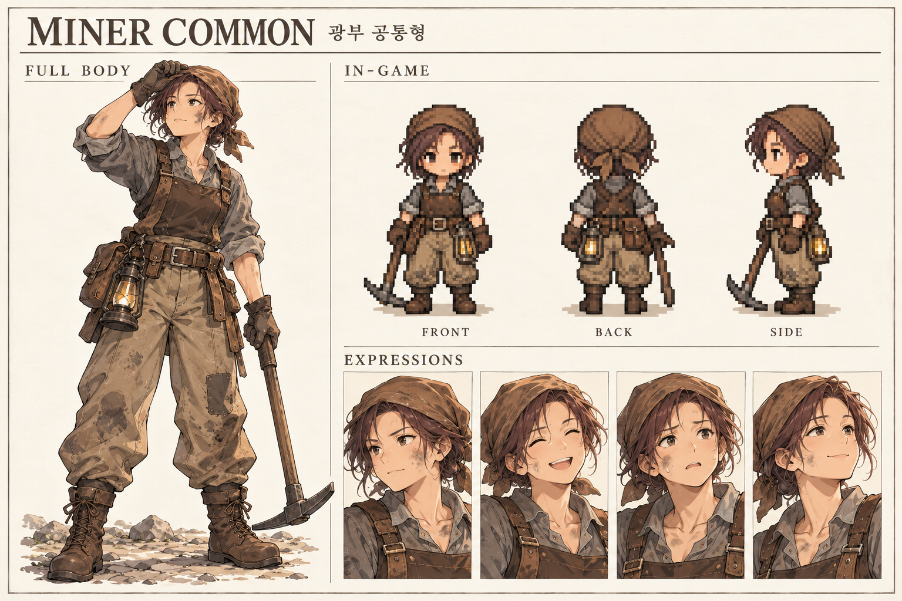
노동자 · 돌샘
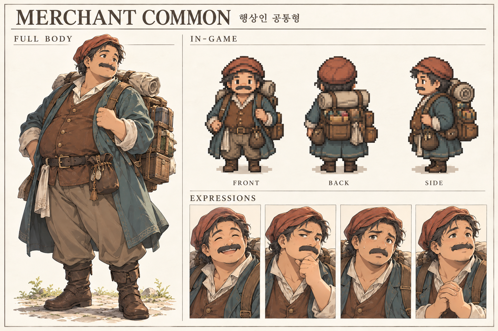
상인·여행자 · 서리골 · 돌샘 · 남방 도시연맹
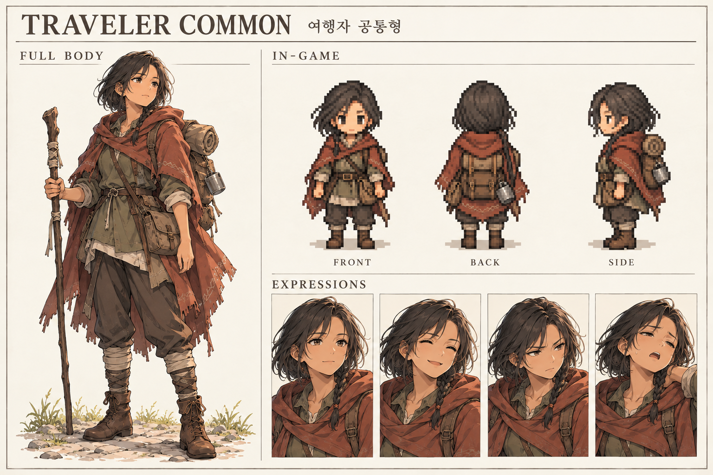
상인·여행자 · 산길 · 남방 도시연맹
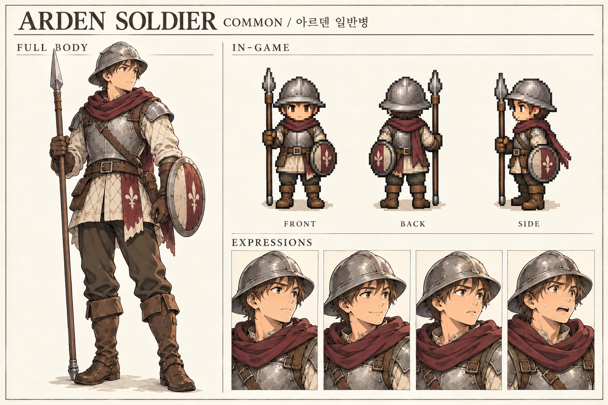
병사 · 아르덴 · 서리골 · 피난 교량
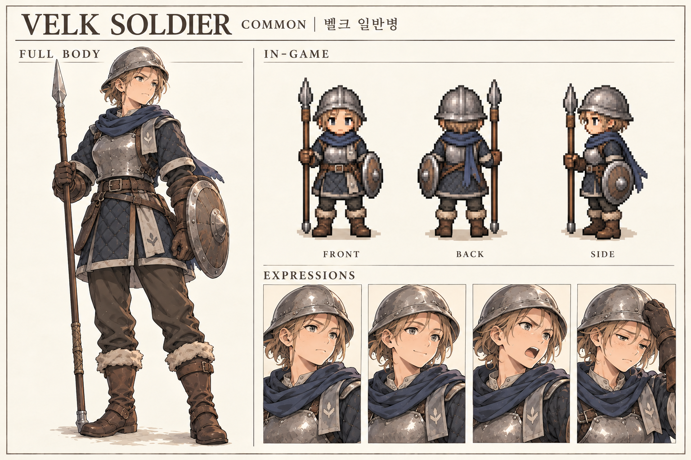
병사 · 벨크 · 국경 · 북방 시설
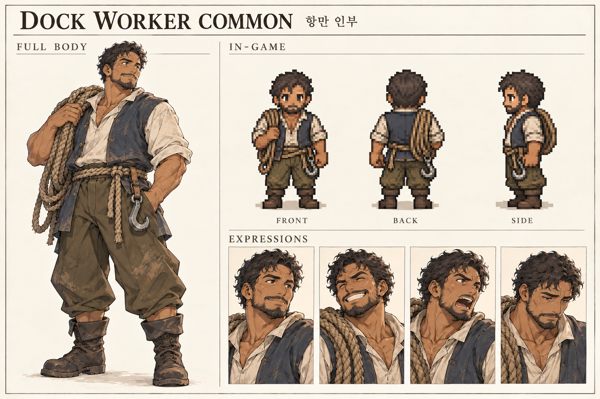
노동자 · 남방 항구 · 해양국
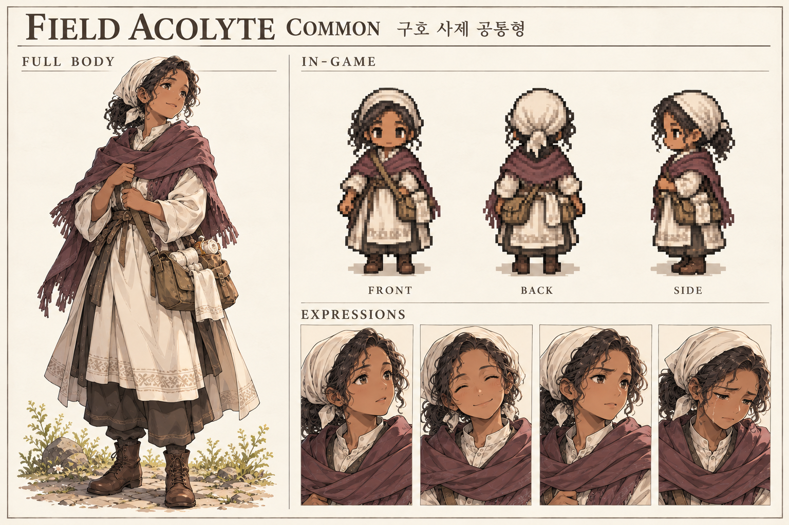
교단·연구 · 성역 · 피난 거점
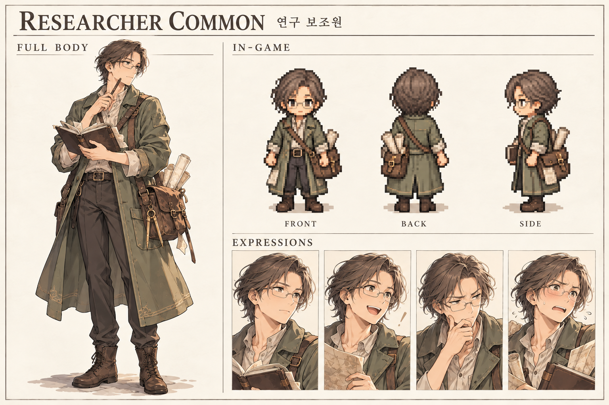
교단·연구 · 남방 학술도시 · 성역 · 고대 시설
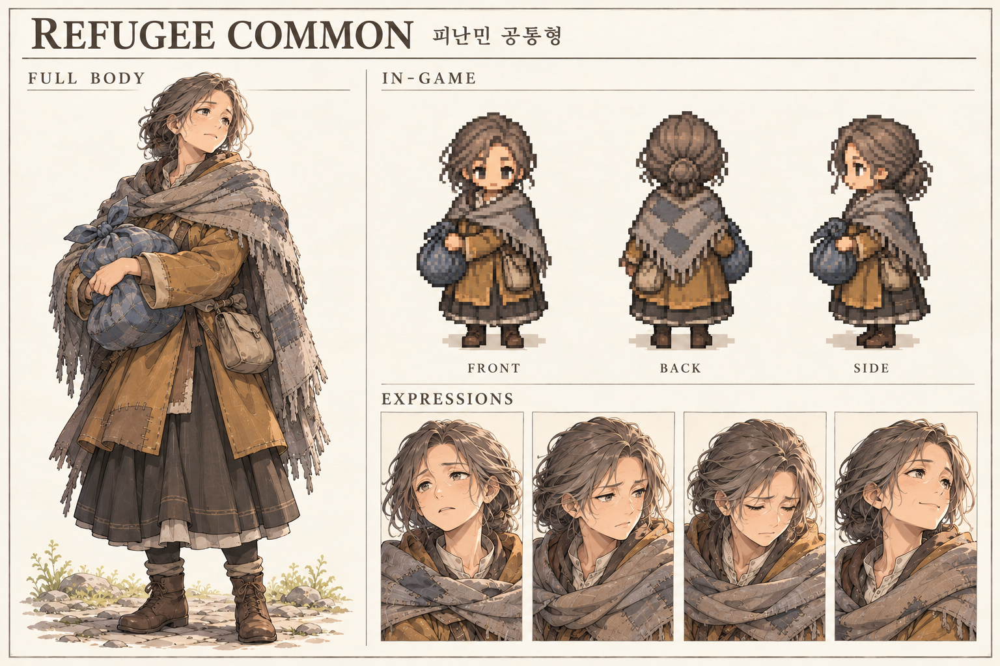
피난민 · 서리골 · 피난 교량 · 해양국